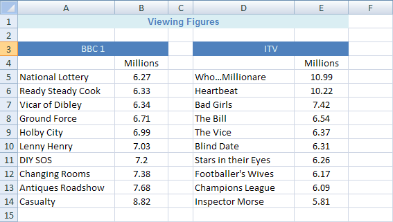
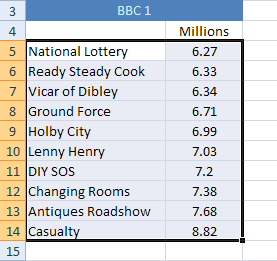
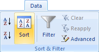
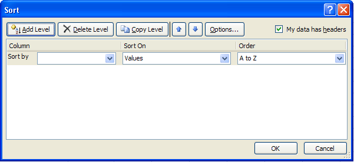
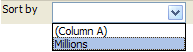
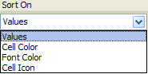
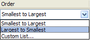
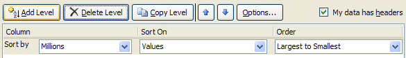
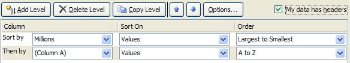
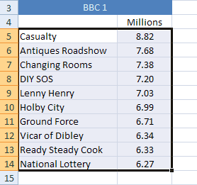

Free
computer Tutorials
|
Free
computer Tutorials
|
|
 HOME HOME
|
|
||||
Microsoft Excel 2007 to 2010How to Sort DataSection three of this course is really all about charts. Later, you'll see how to create a variety of charts and chart styles with Excel. Microsoft have really revamped chart creation from Excel 2007 onwards. If you've ever used previous versions of the software, you'll appreciate how easy it is to produce impressive results. First, though, we'll tackle the subject of how to sort data. The two subjects are not really related, but the data going in to our charts is a good opportunity to learn about this important topic.
Sorting Data in Excel 2007/2010To make a start, you need to create the spreadsheet below. You don't need to use the same colours as ours, but reproduce the data and the headings exactly as they are in this one:  Our spreadsheet is all about the viewing figures for the two main TV channels in the UK. The data is a bit old, but that's not important. As long as we have some nice information to sort, that's what matters. The viewing figures for ITV have been sorted, from the highest first
to the lowest last. The BBC1 figures are still waiting to be sorted.
Let's see how to do that now.
Descending Sort in Excel 2007/2010We want to sort the BBC1 viewing figures in the same way that the ITV figures have been sorted. We'll put the highest programme first and the lowest last. This is called a Descending Sort. If you do it the other way round, it's known as an Ascending Sort. The first thing to do is to highlight the information that you want to sort. In your spreadsheet, highlight cells A5 to B14. The crucial thing to remember when you want to sort data in Excel is to include the text as well as the numbers. If you don't, you'll end up with a spreadsheet where the numbers don't relate to the information, which could spell disaster in bigger spreadsheets! Your highlighted spreadsheet, though, should look like this one:  To sort your BBC 1 viewing figures, do the following:

 The Sort By drop-down list seems empty. Click the down arrow to reveal the columns you selected:  We want to sort this by the values in the Millions column. So select Millions from the Sort by list. Sort On is OK for us - it has Values. But click to see the options in the drop down list:  Values is the one you'll use the most. Once we have a Sort By and Sort On option selected, we can then move on to the Order. Click the down arrow to see the options on the Order list:  Select Largest to Smallest. Your Sort dialogue box should then look like this:  If you clicked OK, your data would be sorted. But the level buttons at the top can come in handy. If two items in your data have the same numbers, then you can specify what to sort by next. For example, if we have two programmes that have 6.3 million viewers, we could specify that the names of the programmes be sorted alphabetically. To do this, click the Add Level button, and you'll see some
additional choices appear. You'll see the same lists as the Sort By
box. If you select Column A, and then Descending, Excel will do an alphabetical
sort if two items have the same viewing figures.  In the image above, we've added a "Then By" part, just in case there is a tie. You don't have to do this, as we have no numbers that are the same. Click OK to sort your data, though. If everything went well, your sorted data should look like this: 
But that's all we need to do for the sort. You can move on to creating your first chart in Excel 2007/2010. |
|||||
|